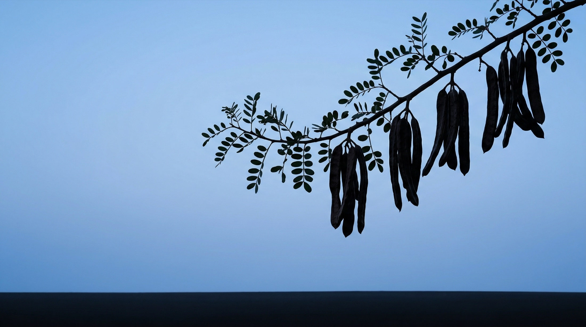
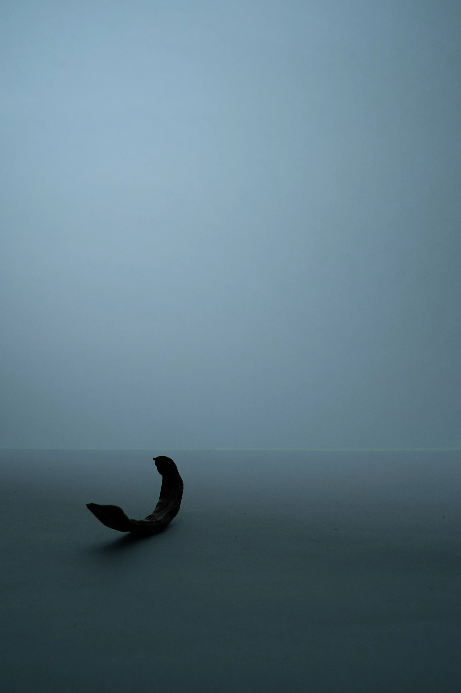
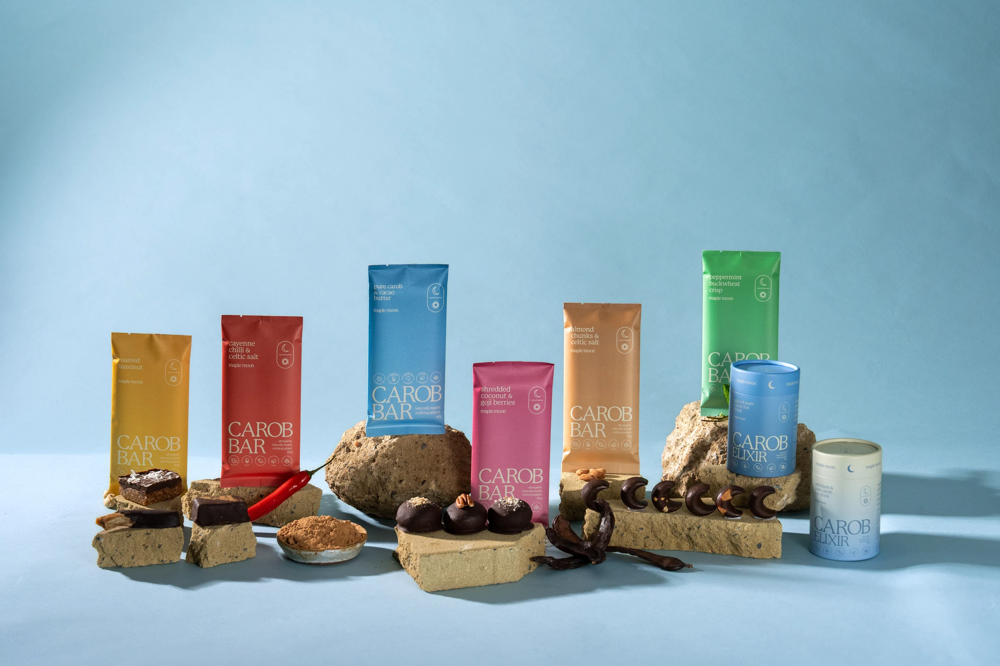
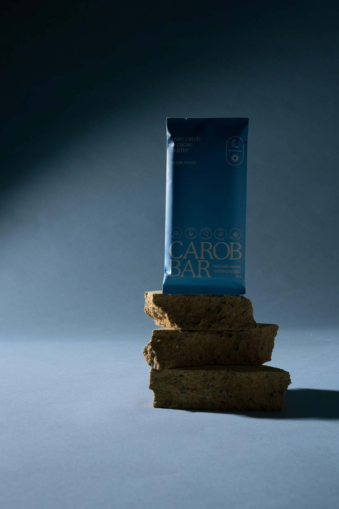
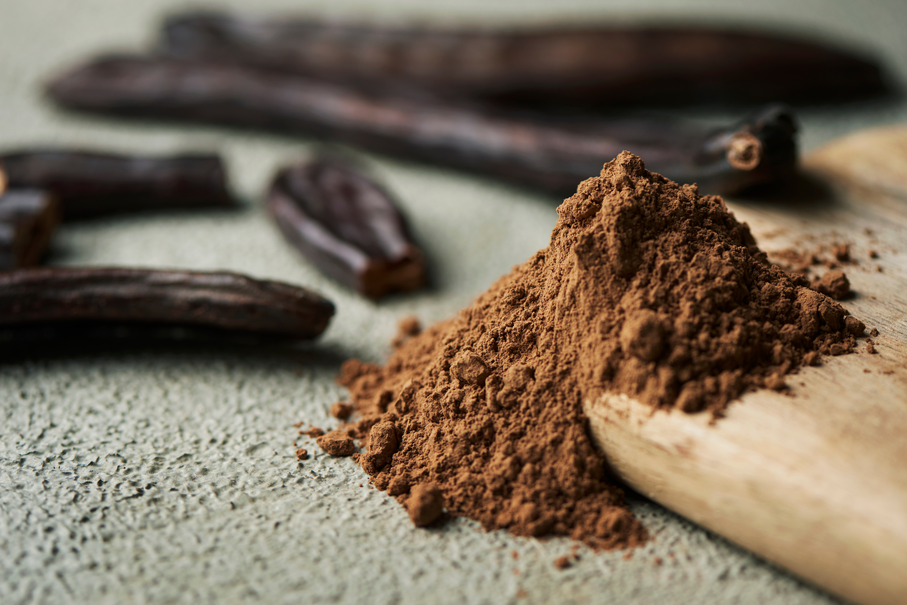
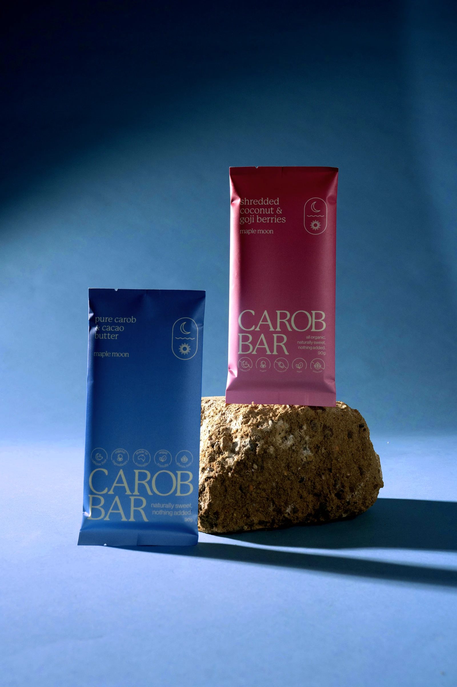
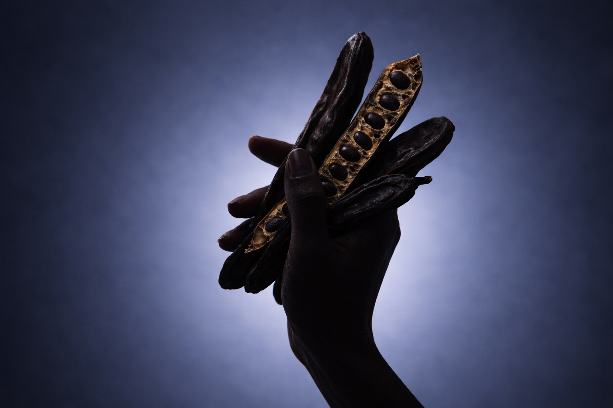
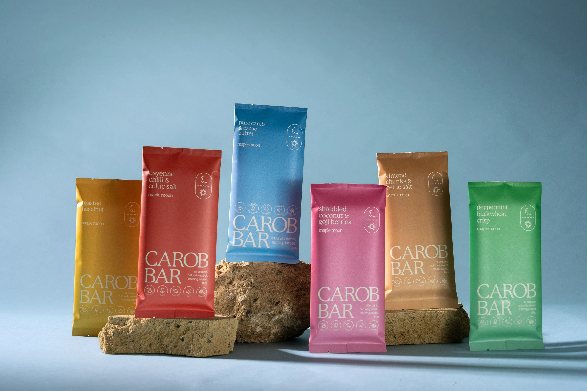
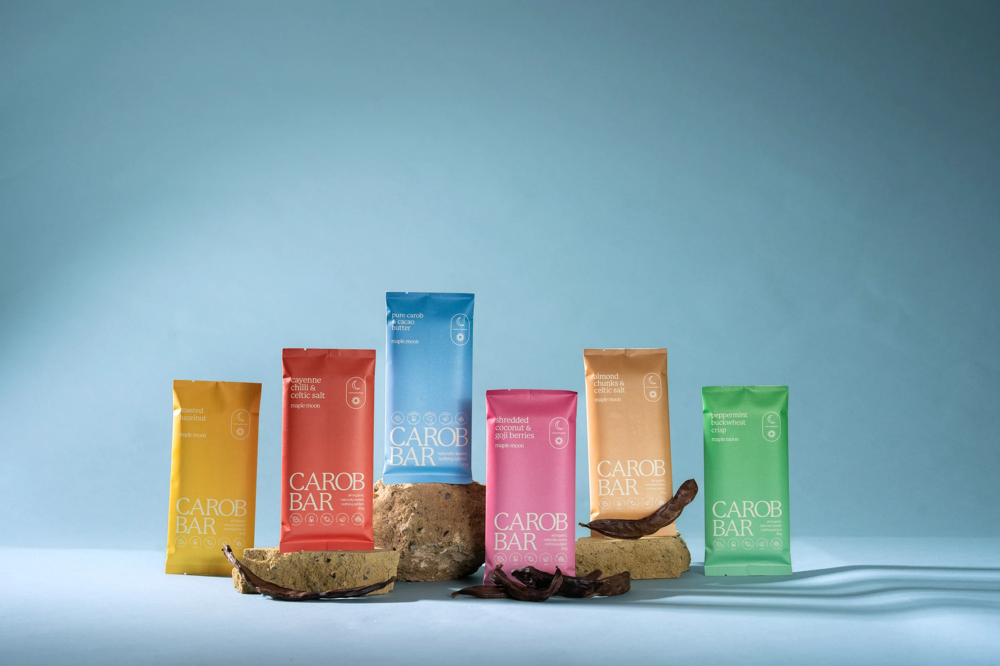

What is Carob, actually?
A sweet pod that grows in the warm Australian sun. Not a bean, no roasting tricks, no bitterness to hide. We slow-roast and mill it with cacao butter, and that is the whole recipe.
From pod
to bar.
Carob is a sweet pod from the warm Australian sun. Four steps, no shortcuts, nothing added.



The pod, up close.
On the tree, in the hand, and on its way to becoming a bar.






Carob and cacao, honestly.
We love chocolate too. Carob is simply a different plant with a different nature, and that changes what ends up in the bar.
Sweet by nature.
- Sweet from the podNothing needs to be added to make it taste good.
- Naturally caffeine freeFrom tree to bar, there is none to remove.
- Made for the eveningA square after dinner sits gently.
Bitter by nature.
- Bitter from the beanCacao usually needs added sugar to balance it.
- Carries caffeineA lot of the fun, and less fun late in the day.
- Built for the afternoonMore lift than wind-down.
No hard feelings either way. We just think the quiet end of the day deserved its own bar.
Asked, answered.
The four things everyone asks at the market stall.
Does carob taste like chocolate?
It is a close cousin, not an impersonation. Roasted carob is smooth and naturally sweet, with a gentle toasted warmth of its own. If you come to it expecting carob rather than chocolate, it wins you over on its own terms.
Is there any caffeine?
No. Carob is naturally caffeine free, so there is nothing to remove and nothing hiding in the fine print. That is why we think of it as the evening bar.
What is in a bar?
Slow-roasted carob milled with cacao butter, plus whatever the label says, like roasted hazelnut or peppermint. Nothing else. The pod is sweet enough on its own.
Where is it made?
Every bar is handmade in small batches in Brunswick Heads, on the far north coast of New South Wales, from Australian-grown carob.

Taste it for yourself.
Bars, moons, bites, elixirs and carob bananas. All handmade in Brunswick Heads, naturally sweet with nothing added.
Shop the range